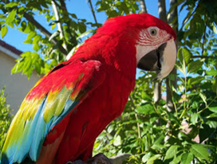
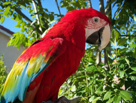

¡AYUDEMOS A PREVENIR LA EXTENCION DE LOS ANIMALES!
La reproducción es muy importante en los animales y mucho mas para los que están en peligro de extinción ya que esta sirve para perpetuar la especie y que siga existiendo. En el caso de los animales en peligro de extinción una buena opción es la reproducción en cautiverio ya que puede ser eficaz para librar la extinción. Para que se logre la reproducción de las especies se debe mantener un equilibrio en su ecosistema. Los animales han cambiado su manera de reproducción e incluso no reproducirse, ya que nosotros hemos invadido su espacio con la destrucción de su hábitat.